Fashion show
SS24
About
Following FW22, the challenge was to evolve the Zaira Christa design language while creating a collection with its own distinct identity and seasonal point of view. Developed the collection from concept and visual research through garment design and final presentation. I explored silhouette, fabrication and styling as tools for storytelling, translating the central concept into a cohesive runway collection.
Role- Fashion Design
- Creative Direction
- Garment Development
- Styling
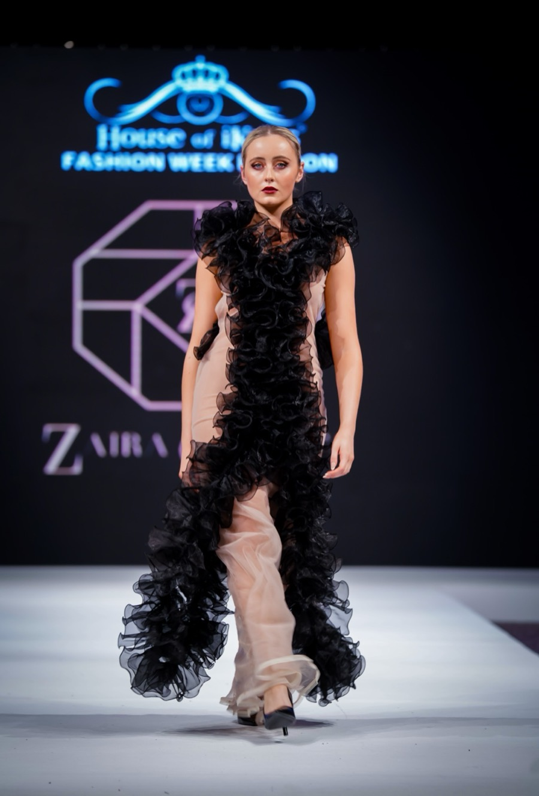
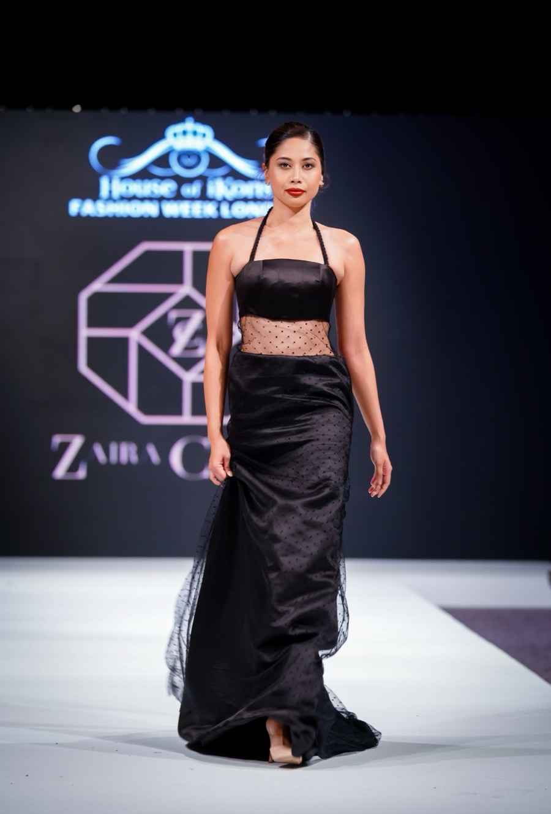
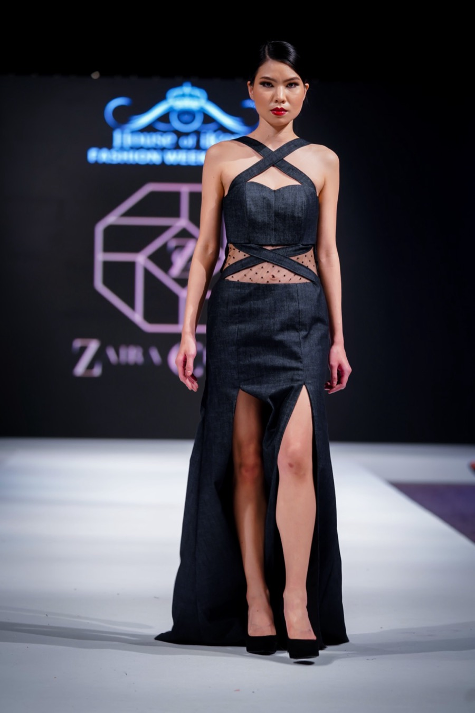
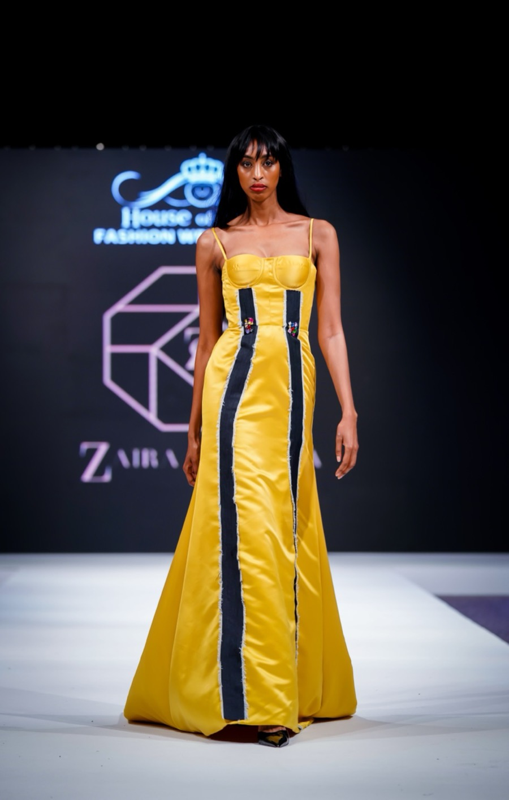
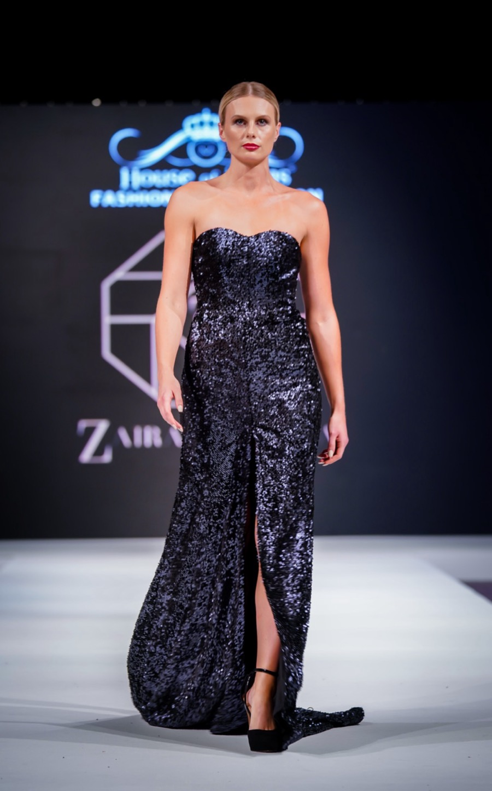
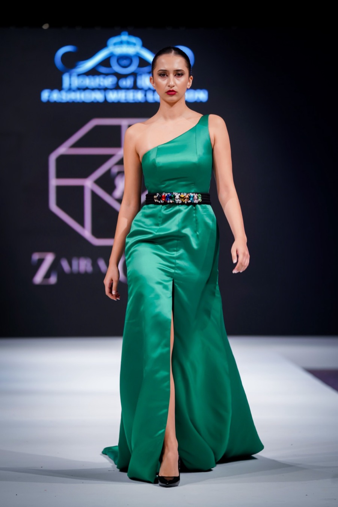
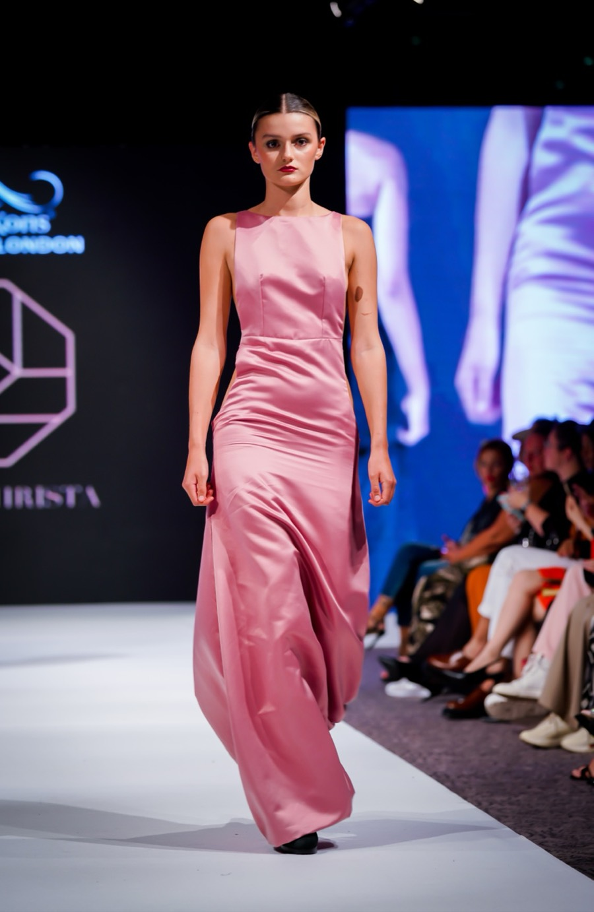
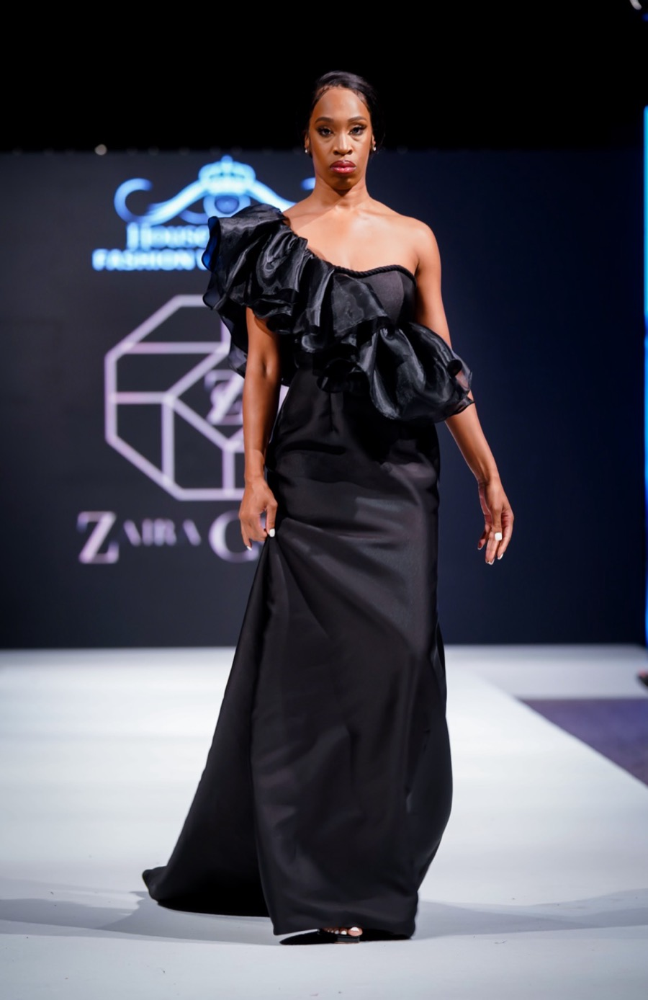
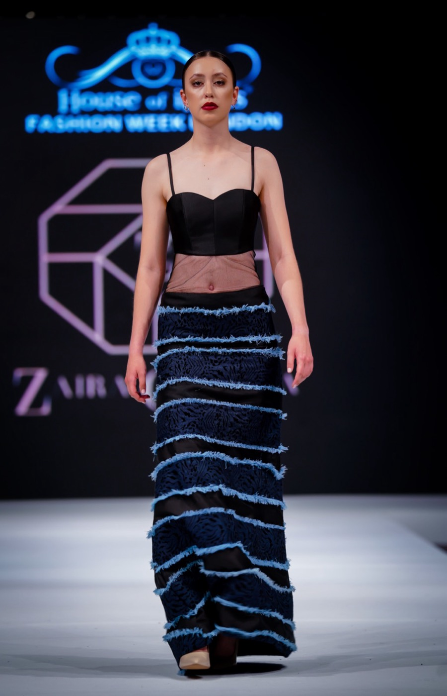
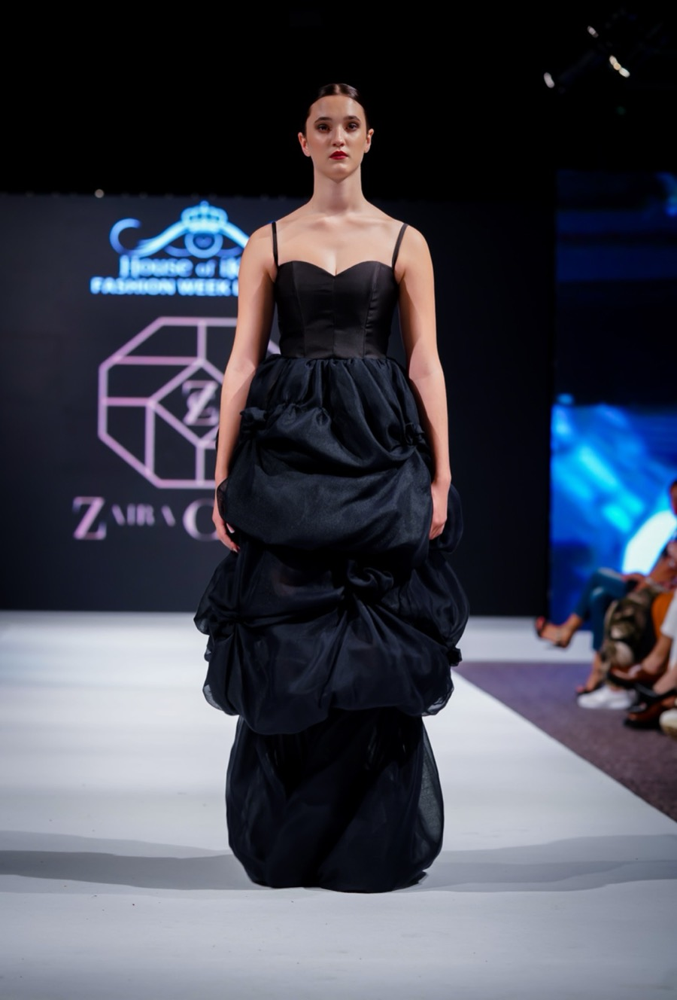
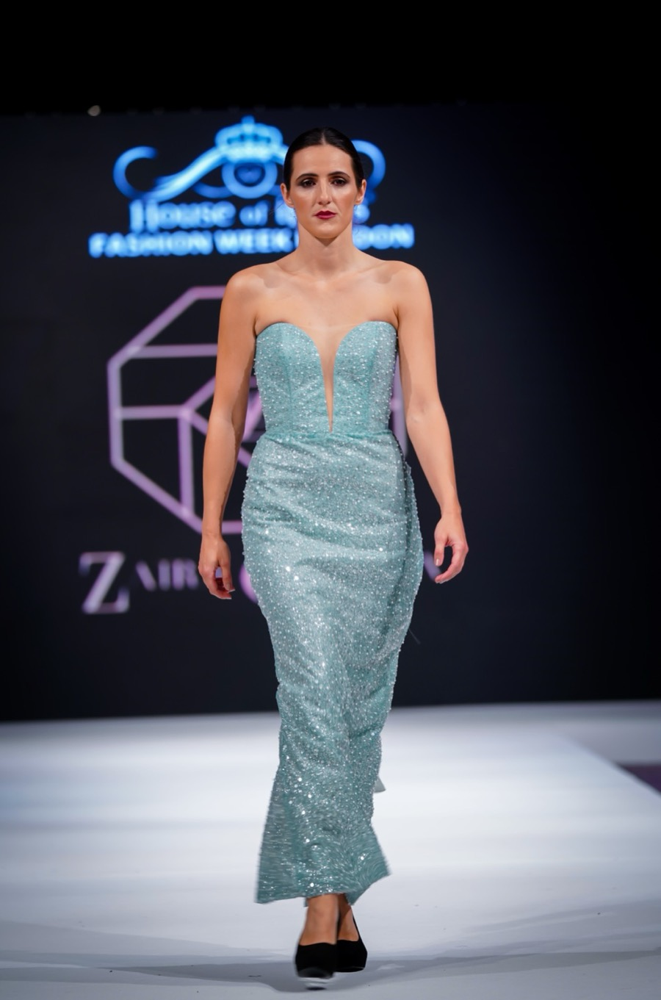
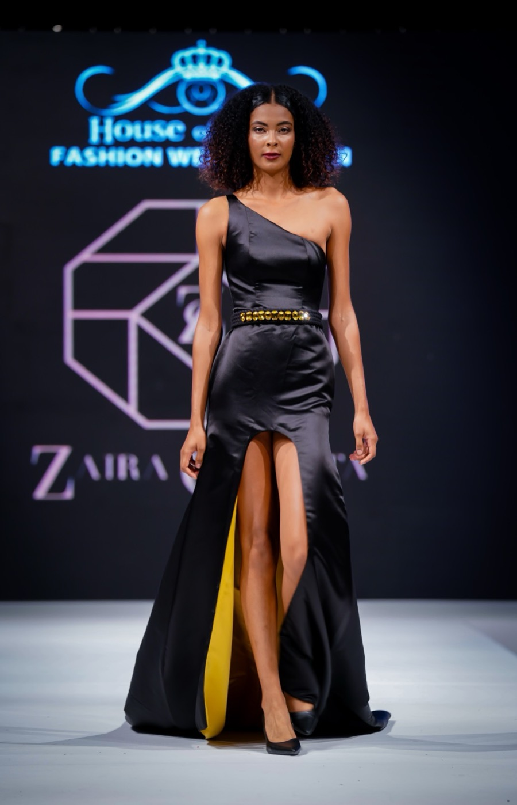